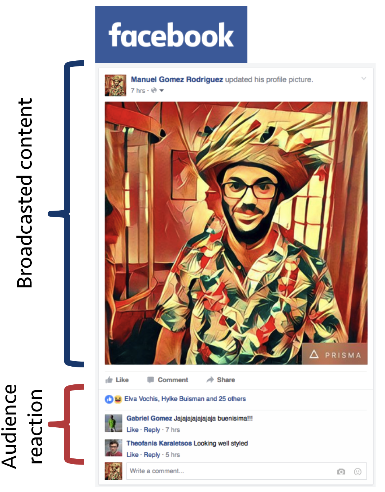
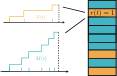
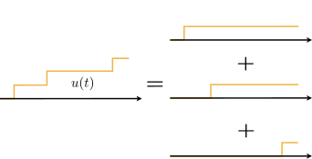

RedQueen
An Online Algorithm for Smart Broadcasting in Social Networks
Social media is a broadcasting platform
Everybody is a broadcaster



When-to-post is a hot topic
Follower's attention is scarce

Rank is a proxy for visibility/interaction

Dynamics of inverse-chronological rank

$$
r(t+dt) = \left\{
\begin{array}{ccccl}
& (r(t)+1) & {\color{other} dM(t)} & {\color{us} (1-dN(t))} & {\color{other} \text{Others post}}\\
+ & 0 & {\color{other}(1 - dM(t))} & {\color{us} dN(t)} & {\color{us} \text{Our broadcaster posts}}\\
+ & r(t) & {\color{other} (1 - dM(t))} & {\color{us} (1- dN(t))} & \text{No-one posts}
\end{array}
\right.
$$
Behavior of other broadcasters is complex
Show illustrations for steady, piecewise constant, bursty behavior
Online algorithm works best
RedQueen does not need to infer any at all!
Loss function
$$
\begin{align}
\underset{u(t_0, t_f]}{\text{minimize}} &
\quad \mathbb{E}_{(N, M)(t_0, t_f]}\left[
\int_{t_0}^{t_f} \left( \frac{1}{2} s \,r^2(\tau) + \frac{1}{2} q\,u^2(\tau) \right) d\tau
\right] \\
\text{subject to} & \quad u(t) \geq 0 \quad \forall t \in (t_0, t_f]
\end{align}
$$
- Trades off low rank and high posting rate
- Leads to an analytical solution
- Generalizes to multiple followers
Optimal rate of posting
$$
\overbrace{u(t)}^{\text{broadcast intensity}} = \sqrt{s/q}\,\underbrace{r(t)}_{\text{Rank in feed}}
$$
- Simple
- Efficient
- Optimal
Sampling from \( u(t) \)
\( u(t) \) is a superpositioning of Poisson intensities

Sampling from \( u(t) \)
Take a sample from each component and compute minimum

Demo
Results
Conclusion
Questions?
Utkarsh Upadhyay